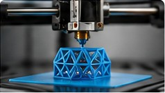
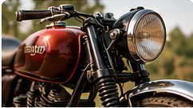

Ingénieur, concepteur et passionné de création technique.
Depuis plus de quinze ans, je travaille au développement de systèmes mécatroniques, principalement dans le domaine de la robotique. Mon parcours m'a amené à intervenir sur des produits complexes, de la recherche et du prototypage jusqu'à la conception et à la validation de solutions techniques.
En parallèle de mon activité professionnelle, je garde le goût de l'expérimentation et de la fabrication : comprendre un mécanisme, concevoir une pièce, réparer ou donner forme à une nouvelle idée.
Blaise Bleunven
Expérience professionnelle
Mon parcours
Des expériences complémentaires autour de la mécatronique et de la robotique.
Novembre 2018 — Septembre 2025
Ganymed Robotics
Ingénieur Hardware Principal — Responsable Hardware
Développement d'une plateforme de robotique chirurgicale : architecture matérielle, conception mécanique et mécatronique, prototypage, essais et coordination technique.
Février 2012 — Novembre 2018
Aldebaran / SoftBank Robotics
Ingénieur mécatronique
Conception et développement de briques innovantes pour la robotique humanoïde, intégration de sous-systèmes mécaniques, électroniques et logiciels, prototypage et validation.
Novembre 2010 — Février 2012
CEA-LIST
Ingénieur chercheur en mécatronique
Recherche autour de la mobilité omnidirectionnelle pour un arceau chirurgical : étude, développement et évaluation d'une solution mécatronique.
Janvier 2010 — Août 2010
Haption
Stage ingénieur mécatronique
Conception et intégration d'une interface haptique.
Formation
Les bases de mon parcours
École nationale d'ingénieurs de Brest
Diplôme d'ingénieur en mécatronique — ENIB
Brest, France
2004 — 2010
En dehors des projets
Centres d'intérêt
Des activités qui nourrissent ma curiosité et mon envie de créer.
Musique
Guitare, basse, composition assistée par ordinateur et pratique en groupe.

DIY & Maker
Impression 3D, conception de véhicules électriques personnalisés et fabrication d'instruments.
Design & restauration
Aménagement intérieur, optimisation d'espaces de travail et restauration de meubles anciens.

Mécanique
Restauration et entretien de motos anciennes.
BLAISE BLEUNVEN · Ingénierie mécanique & développement technique